UniSpark
Hybrid attention for multimodal understanding and generation
Text-to-image generation
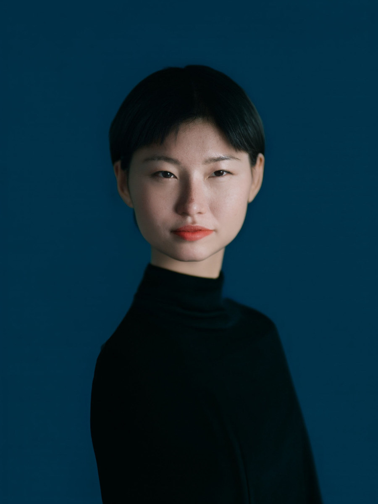
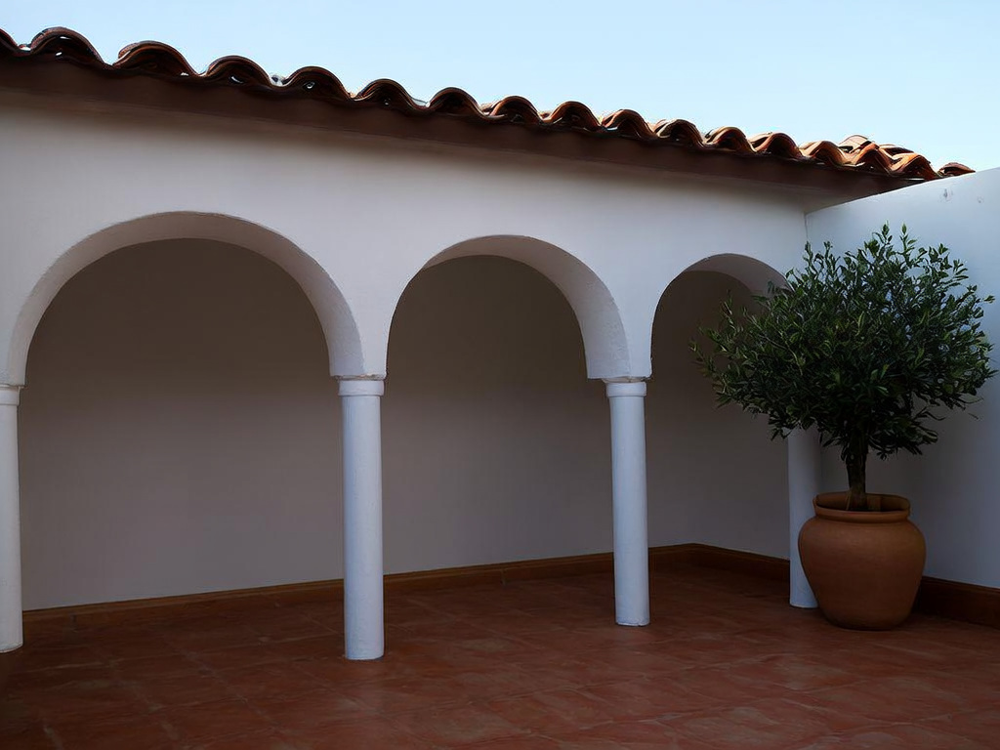
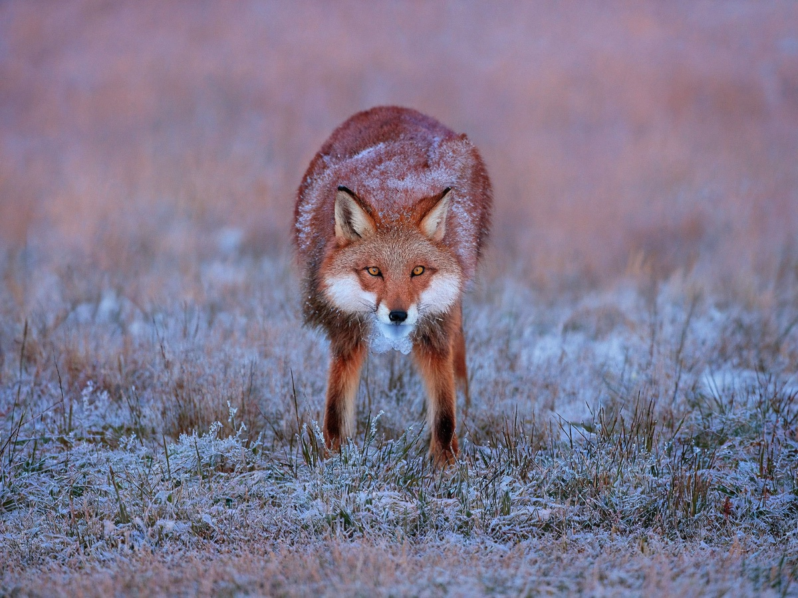
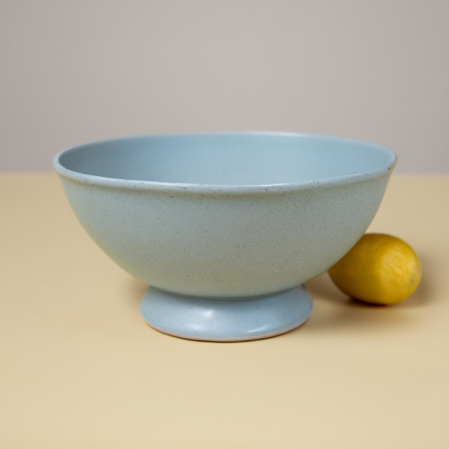
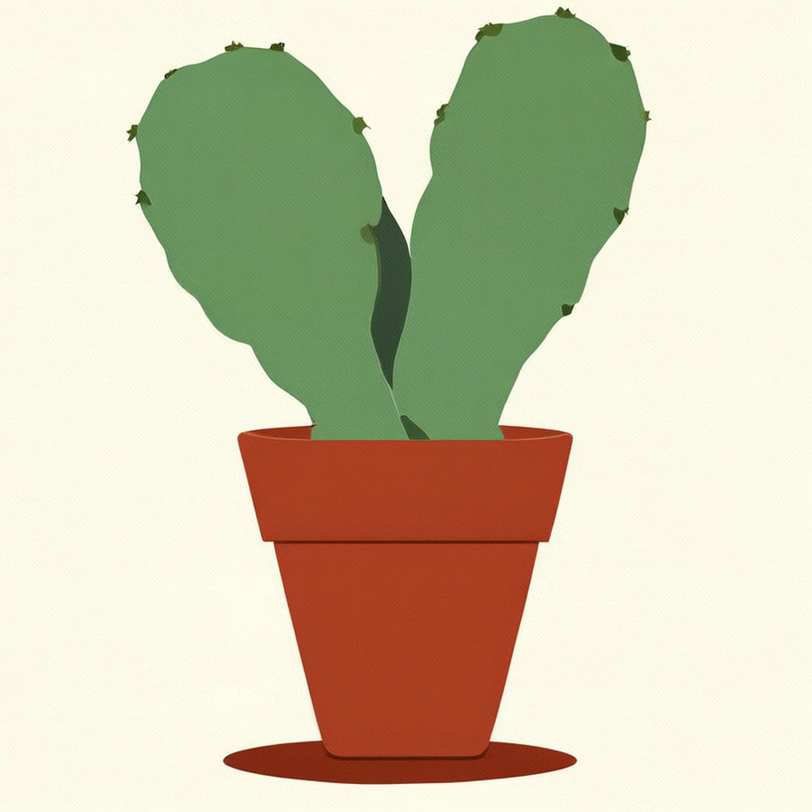
Instruction-guided editing
Change the liquid from green to amber.
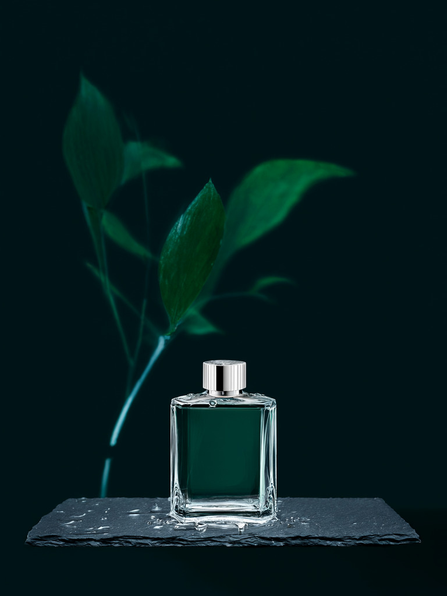
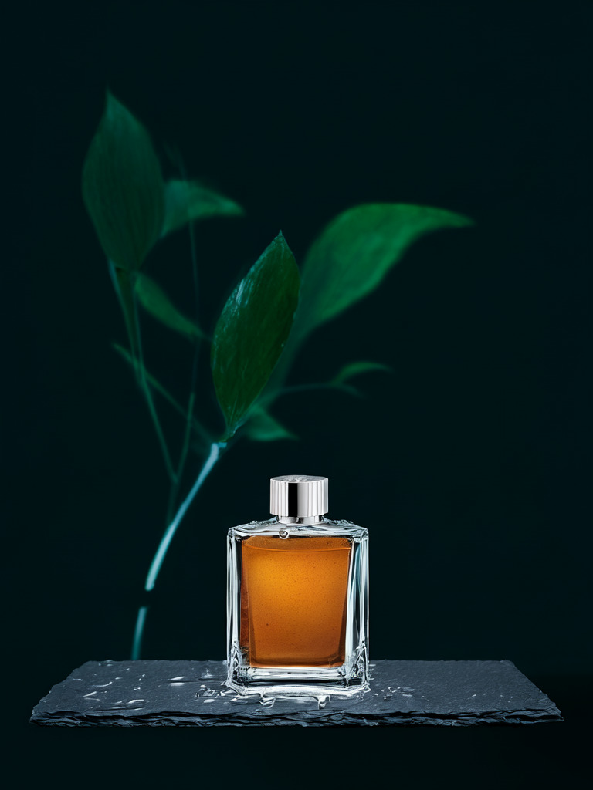
Interleaved generation
Carry visual context across successive images.
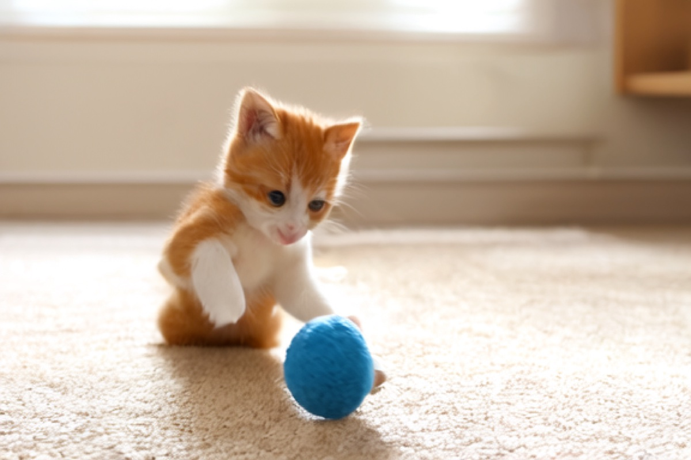
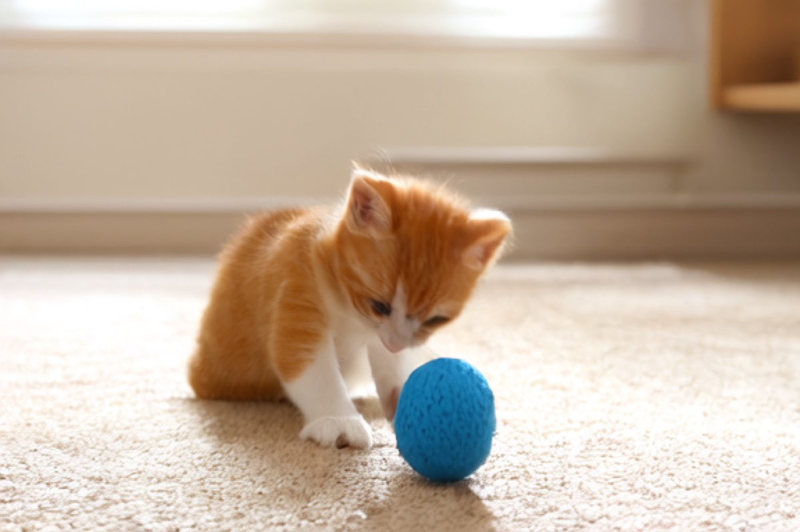
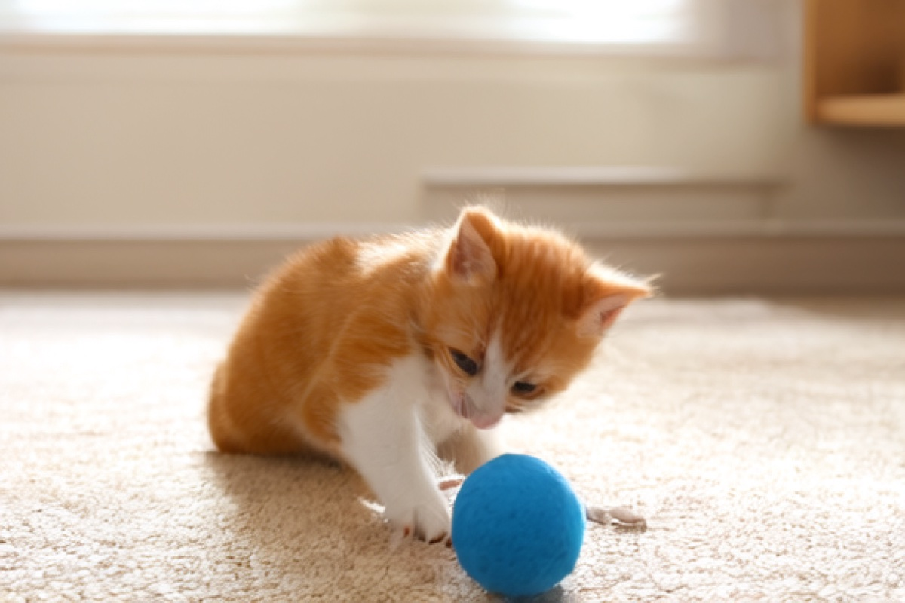
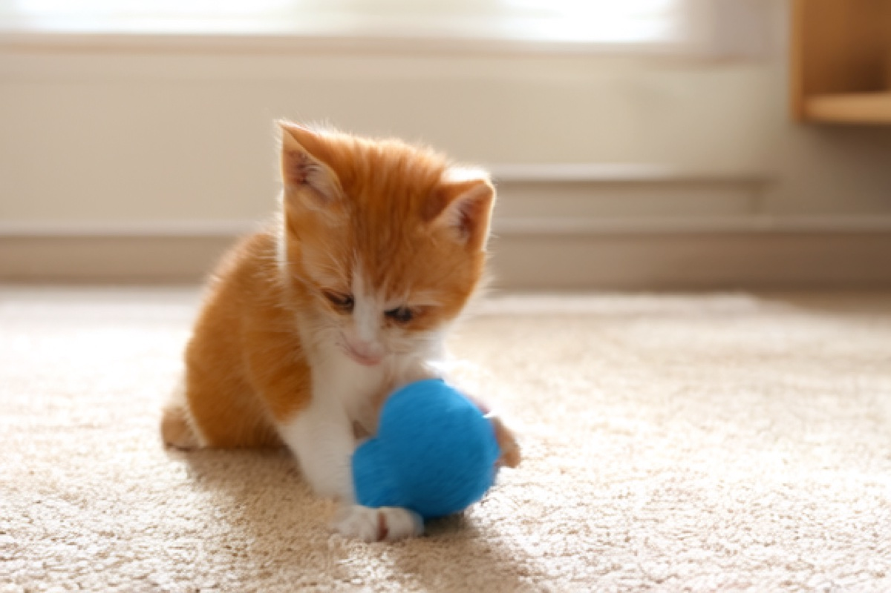
Kitten & yarn
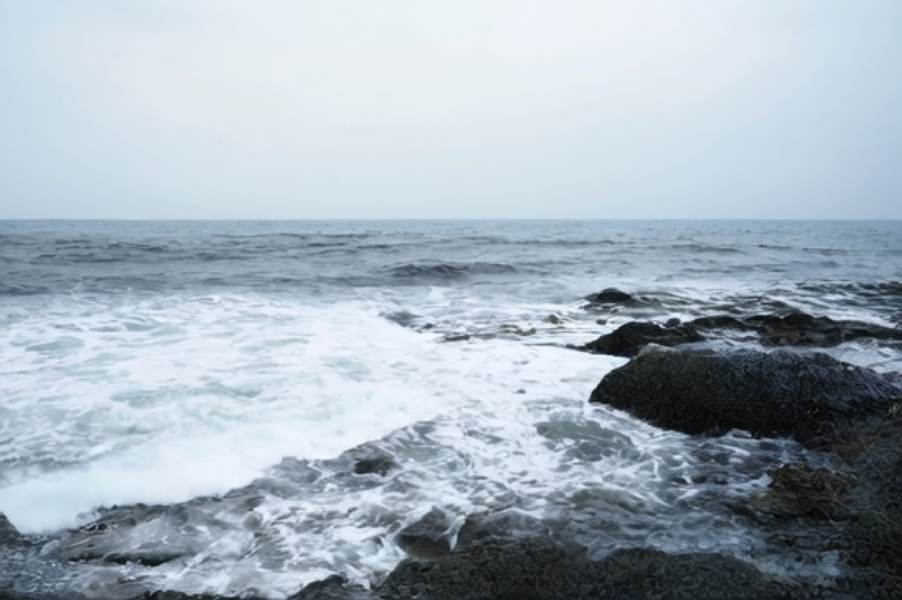
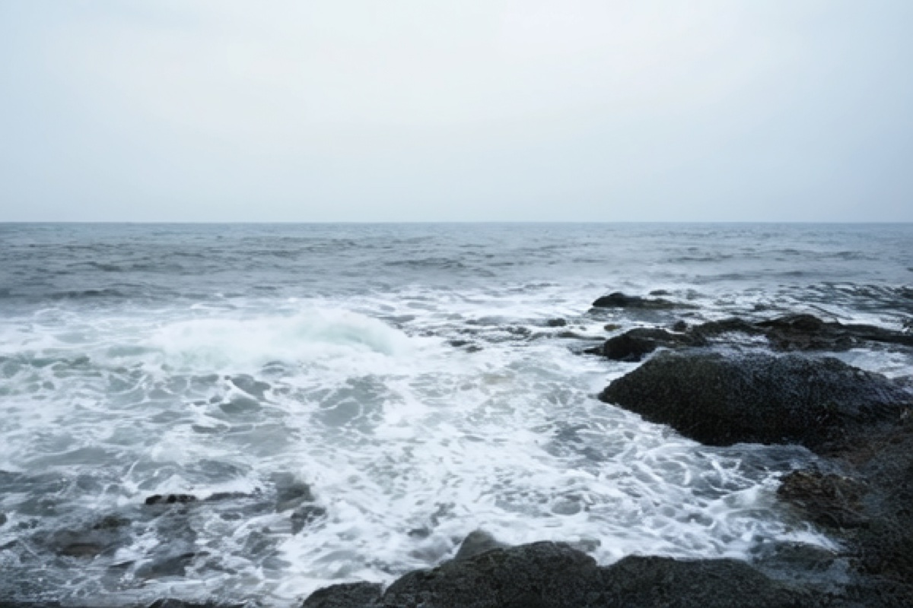
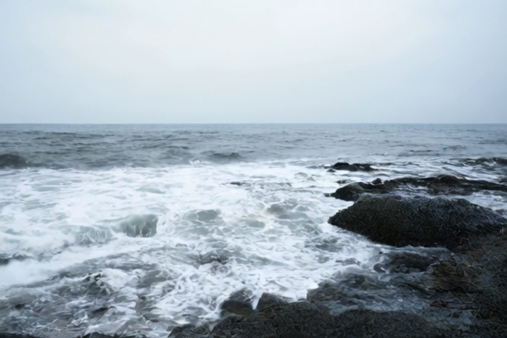
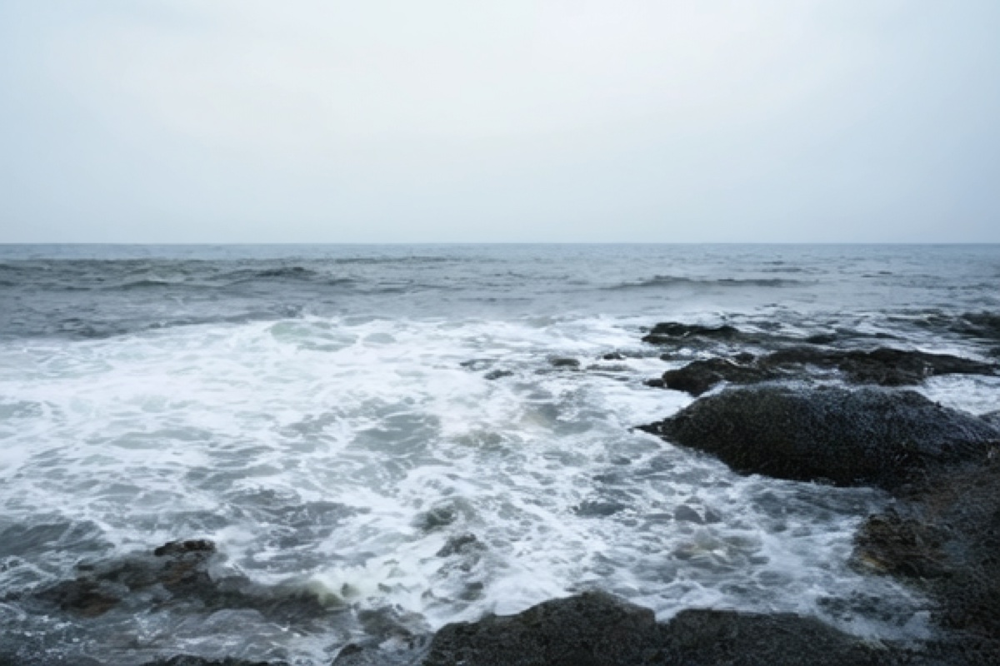
Coastal waves